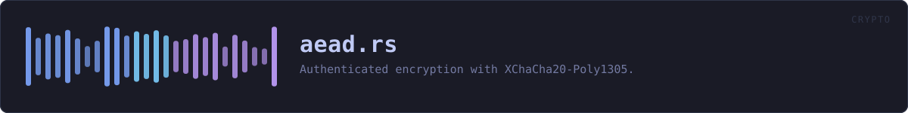

crates/veilvoice-crypto/src/aead.rs
veilvoice-crypto · 168 lines · read the source
Authenticated encryption with XChaCha20-Poly1305.
XChaCha20 rather than plain ChaCha20 because its 192-bit nonce can be drawn at random with no practical collision risk. The 96-bit nonce of RFC 8439 ChaCha20-Poly1305 requires a counter and careful state tracking to stay unique across runs; getting that wrong is catastrophic, and a random 192-bit nonce removes the failure mode entirely.
Every call is authenticated over associated data as well as the plaintext, which is how the container header in [crate::container] is bound to its ciphertext: flipping a bit in the stored KDF parameters produces a decryption failure rather than a silently different key.
WHAT CALLS WHAT
The functions this file defines, and the calls between them. An edge means the callee's name appears, called, inside the caller's body — a syntactic reading, not a type-resolved one.
The same graph as Mermaid source
%%{init: {"theme":"base","themeVariables":{"background":"#1a1b26","primaryColor":"#1f2335","primaryTextColor":"#c0caf5","primaryBorderColor":"#7aa2f7","secondaryColor":"#16161e","tertiaryColor":"#16161e","lineColor":"#737aa2","textColor":"#c0caf5","mainBkg":"#1f2335","nodeBorder":"#7aa2f7","clusterBkg":"#16161e","clusterBorder":"#2f3549","fontFamily":"ui-monospace, SFMono-Regular, Consolas, monospace","fontSize":"14px"}}}%%
flowchart TD
n_random_nonce(["random_nonce<br/>line 25"])
n_cipher["cipher<br/>line 31"]
n_seal(["seal<br/>line 41"])
n_open(["open<br/>line 60"])
n_open --> n_cipher
n_seal --> n_cipher
classDef entry fill:#1f2335,stroke:#7aa2f7,color:#c0caf5
class n_random_nonce,n_seal,n_open entry
classDef helper fill:#1f2335,stroke:#bb9af7,color:#c0caf5
class n_cipher helperThis site loads no third-party script, so it cannot run Mermaid; the diagram above is the same nodes and edges drawn by the generator instead. GitHub renders the source below directly.
ITEMS
| Item | Line | Documentation |
|---|---|---|
NONCE_LEN pub const | 20 | Nonce length for XChaCha20-Poly1305, in bytes. |
TAG_LEN pub const | 22 | Poly1305 authentication tag length, in bytes. |
random_nonce pub fn | 25 | Draw a fresh random nonce from the OS CSPRNG. |
cipher fn | 31 | |
seal pub fn | 41 | Encrypt plaintext, authenticating aad alongside it. |
open pub fn | 60 | Decrypt and verify. |